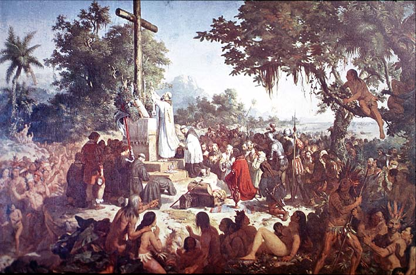

|
|  |
|
Vitor Meirelles, Primeira Missa no Brasil
|
On the final version, first exhibited in Paris in 1859 and, with small modifications, at Rio de Janeiro in 1860, the point of view is located much closer to the scene (which moreover seems to have shifted from an inland location to the seashore), allowing for a multiple cast of characters and a much clearer distinction between the small group of Christians and the surrounding indigenous multitude, subtly hierarchised by the use of sharp contrasts of light and shadow. For his painting Meireles had not only consulted critical and historical sources, from Pedro Vaz de Caminha큦 colonial Cartas to Ferdinand Denis큦 history of Brazilian literature, but also a colonial visual tradition of 'landing scenes' such as the engravings of Theodor de Bry and other sixteenth- and seventeenth-century artists. In 1876 Meirelles큦 painting was acquired by the Brazilian state and displayed, alongside two battle scene from the Paraguayan war, at the Philadelphia World큦 Fair of the same year.
|